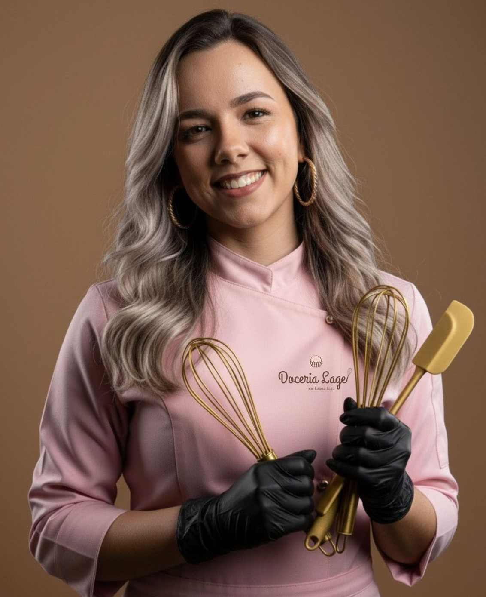
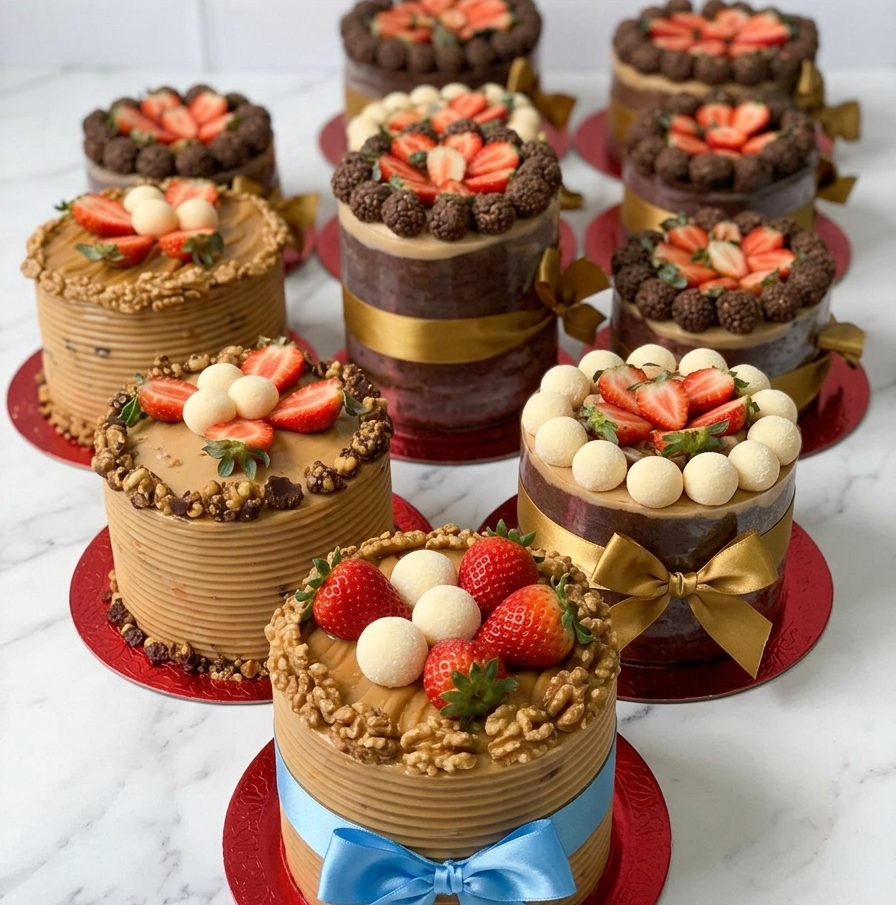

-
Receitas Artesanais
Feitos à mão com ingredientes selecionados
-
Feito com Amor
Cada doce é preparado com dedicação e carinho
-
Qualidade Premium
Ingredientes de primeira qualidade em todas as receitas
-
Cursos e Workshops
Aprenda a fazer seus próprios doces incríveis
Nossa História
Uma jornada de doçura, dedicação e amor pela confeitaria
Luana Lage
Olá! Sou a Luana, uma confeiteira apaixonada por adoçar histórias. Para mim, cada doce carrega muito mais do que sabor: ele leva afeto, cuidado e dedicação em cada detalhe.
É por isso que todo nosso preparo é feito de forma artesanal, com ingredientes de qualidade e aquele carinho que só quem ama o que faz consegue transmitir.
Meu maior compromisso é entregar a você não apenas um doce, mas uma experiência capaz de tornar o seu dia mais inesquecível.
Anos de experiência
Doces produzidos
Clientes satisfeitos

A Doceria
A Doceria Lage nasceu em 2020, em um pequeno espaço no bairro de Macaúbas. O que começou como uma produção caseira se transformou em uma das confeitarias mais queridas da região.
Nossa filosofia sempre foi clara: usar apenas ingredientes de primeira qualidade, manter a tradição das receitas artesanais e inovar constantemente para surpreender nossos clientes.

Nossos Valores
Amor e Dedicação
Cada doce é preparado com carinho e atenção aos detalhes, como se fosse para nossa própria família.
Qualidade Premium
Utilizamos apenas ingredientes selecionados e de primeira qualidade em todas as nossas receitas.
Excelência
Buscamos sempre a perfeição em cada criação, mantendo nosso padrão de excelência reconhecido.